<!DOCTYPE html><html lang="en"><head><meta charset="utf-8"><meta name="viewport" content="width=device-width, initial-scale=1.0"><title>cdste</title><link rel="stylesheet" type="text/css" href="//fonts.googleapis.com/css?family=Ubuntu+Mono|Lato"><link rel="stylesheet" href="res/main.css"><link rel="stylesheet" href="res/grid.css"></head></html><body><div class="body_div"><div class="vertical_center landing"><div id="site_title">$ cd Ste<div class="box blink"> </div></div><div id="links"><!--a#portfolio.fill(href="http://cdste.dunked.com", target="_blank") portfolio--><a id="portfolio" href="#portfolio-section" class="fill">portfolio</a><a id="research" href="#research-section" class="fill">academia</a><a id="about" href="#about-section" class="fill">about</a></div></div></div><button onclick="topFunction()" id="toTop" title="Go to top">Top</button><div id="portfolio-section"><div class="body_div"><div class="vertical_center"><div class="title">Portfolio</div><div data-colcade="columns: .grid-col, items: .grid-item" class="grid"><div class="grid-col grid-col--1"></div><div class="grid-col grid-col--2"></div><div class="grid-col grid-col--3"></div><a href="projects/BAMPFA/bampfa.html" class="page-link grid-item"><div class="grid-img">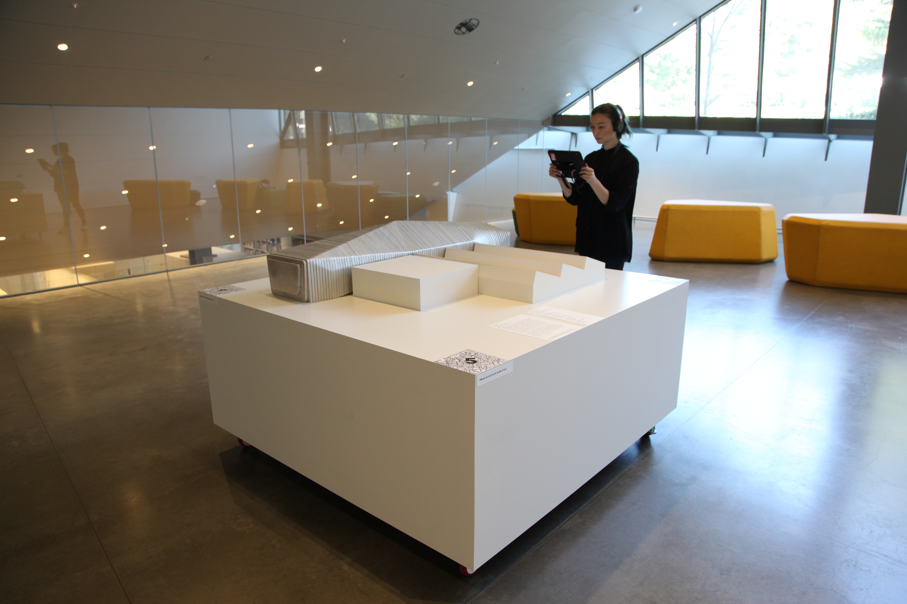</div><div class="grid-txt">BAMPFA AR<div class="grid-txt">Augmented Reality Research and Museum exhibit</div></div></a><a href="projects/Compute/compute.html" class="page-link grid-item"><div class="grid-img">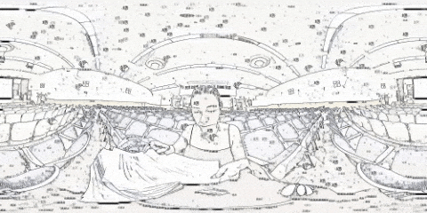</div><div class="grid-txt">So Long, and Thanks for all the Compute<div class="grid-txt">Neural Style Transfer for a Short 360 Film</div></div></a><a href="projects/ARTheater/artheater.html" class="page-link grid-item"><div class="grid-img"></div><div class="grid-txt">AR Theater<div class="grid-txt">R&D for an AR Theatric experience.</div></div></a><a href="projects/Saga/saga.html" class="page-link grid-item"><div class="grid-img">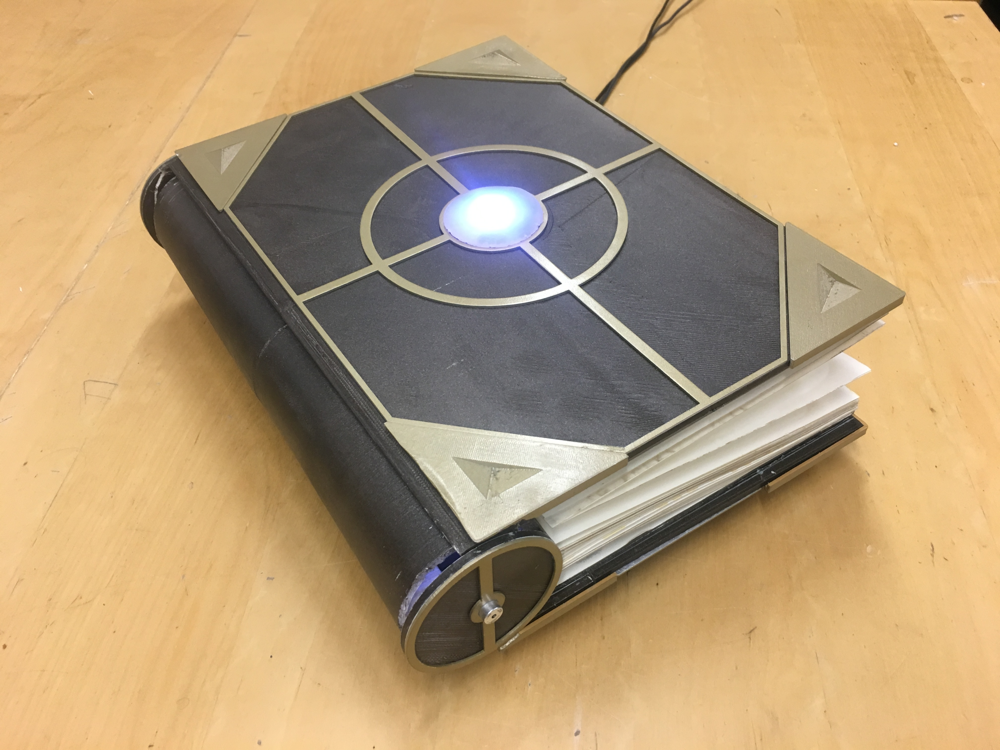</div><div class="grid-txt">Saga<div class="grid-txt">R&D for a children's intelligent bedtime storybook.</div></div></a><a href="projects/BeeBot/beebot.html" class="page-link grid-item"><div class="grid-img">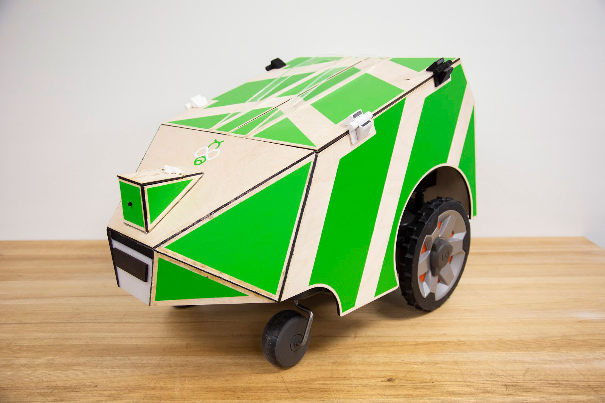</div><div class="grid-txt">BeeBot<div class="grid-txt">R&D for a Robot Composter.</div></div></a><a href="projects/SafeCup/safecup.html" class="page-link grid-item"><div class="grid-img">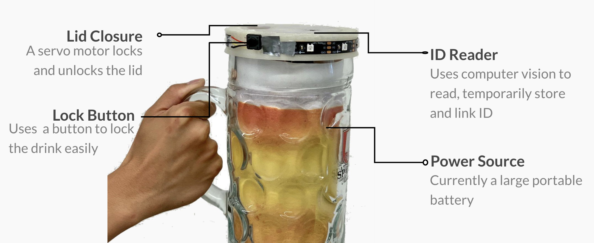</div><div class="grid-txt">SafeCup<div class="grid-txt">R&D for an interactive cup lid.</div></div></a><a href="projects/CubeSort/cubesort.html" class="page-link grid-item"><div class="grid-img">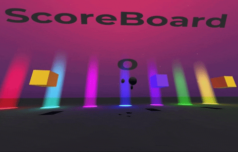</div><div class="grid-txt">CubeSort<div class="grid-txt">R&D for a multiplayer co-op VR game.</div></div></a><a href="projects/VRPainter/vrpainter.html" class="page-link grid-item"><div class="grid-img">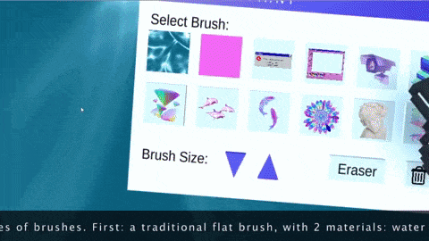</div><div class="grid-txt">VR Painter<div class="grid-txt">Development for a Nostalgic VR painter.</div></div></a><a href="projects/Maker/maker.html" class="page-link grid-item"><div class="grid-img">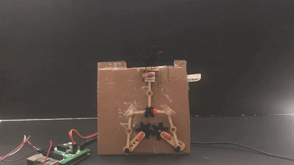</div><div class="grid-txt">Tinkering Stuff<div class="grid-txt">Making things.</div></div></a><a href="projects/Blue/blue.html" class="page-link grid-item"><div class="grid-img">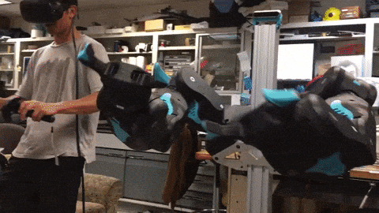</div><div class="grid-txt">VR for BLUE Robot<div class="grid-txt">Quick summer project to help the BLUE team.</div></div></a><a href="https://inst.eecs.berkeley.edu/~cs194-26/fa18/upload/files/proj2/cs194-26-aeh/CS194-26Proj2/" target="_blank" class="page-link grid-item"><div class="grid-img">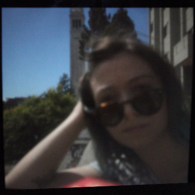</div><div class="grid-txt">Pinhole Camera<div class="grid-txt">Laser cut a pinhole camera.</div></div></a><a href="https://player.vimeo.com/video/99395035" target="_blank" class="page-link grid-item"><div class="grid-img">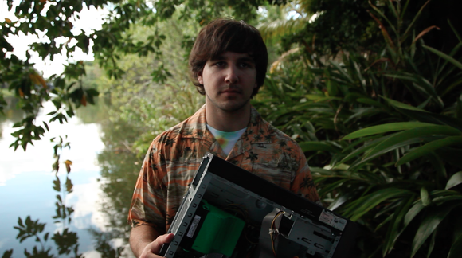</div><div class="grid-txt">The Code<div class="grid-txt">Short Comedy about programmers.</div></div></a><a href="https://www.youtube.com/watch?v=52hLQUMm5Do#action=share" target="_blank" class="page-link grid-item"><div class="grid-img"></div><div class="grid-txt">Over The Counter<div class="grid-txt">Short Film: A simple trip to the pharmacy may not be so simple.</div></div></a><a href="https://vimeo.com/36330789" target="_blank" class="page-link grid-item"><div class="grid-img">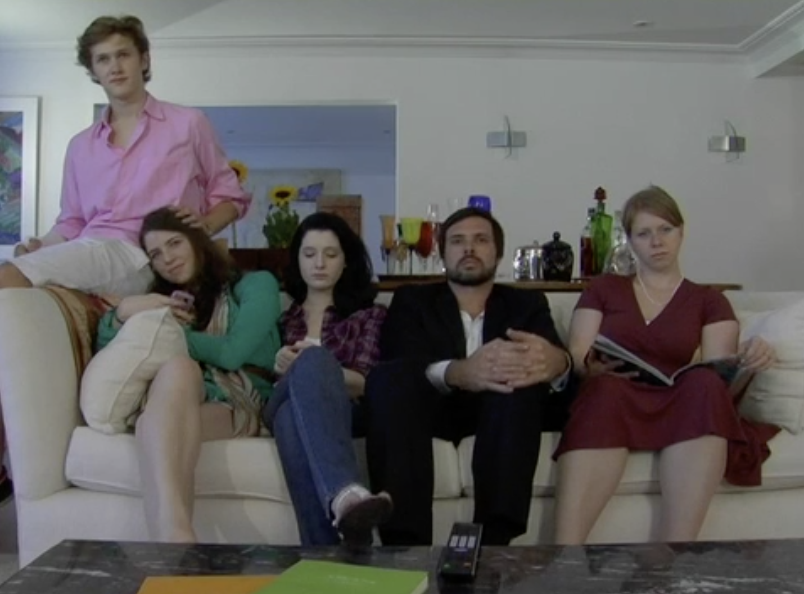</div><div class="grid-txt">The Watsons<div class="grid-txt">Short Film: what happens when no one is watching.</div></div></a></div><!--.sub-title Work--><!--.list VR Instructor,--><!--    a.sub-link(href="https://frameworks.ced.berkeley.edu/2018/virtual-and-augmented-reality-lab/", target="_blank") ARCH 129/229--><!--    | UC Berkeley • Unity, VR, Pedagogy • Jan - Present--><!--.list Software Engineer, Autodesk • fullstack Javascript • 2014 - 2016--><!--a.list.sub-link.pl0(href="https://cdste.dunked.com/tag/ui-design", target="_blank") UX / Design Portfolio--></div></div></div><div id="research-section"><div class="body_div"><div class="vertical_center"><div class="title">Academia</div><div class="sub-title">Publications</div><div class="blurb"><a href="https://dl.acm.org/doi/abs/10.1145/3334480.3383091" target="_blank" class="sub-link">Living Paper: Authoring AR Narratives Across Digital and Tangible Media</a><br>Stephanie Claudino Daffara, Anna Brewer, Balasaravanan Thoravi Kumaravel, and Bjoern Hartmann. 2020. Living Paper: Authoring AR Narratives Across Digital and Tangible Media. In Extended Abstracts of the 2020 CHI Conference on Human Factors in Computing Systems (CHI EA ’20). Association for Computing Machinery, New York, NY, USA, 1–10. DOI:https://doi.org/10.1145/3334480.3383091</div><a href="http://bid.berkeley.edu/" class="sub-title">Berkeley Institute of Design</a><div class="position">Masters advised by<a href="http://www.goodlylabs.org/research-projects/decidingforce/" target="_blank" class="sub-link">Bjöern Hartmann</a></div><div class="blurb">Wrapping up my thesis on Authoring Virtual Reality interactive experiences by Programming by Demonstration.</div><a href="projects/BAMPFA/bampfa.html" class="sub-title">BAMPFA AR - XR Lab</a><div class="position">Immersive Experience Designer and Developer  • 2018-2019</div><div class="blurb">As part of the XR Lab, I built the Augmented Reality experience for the Berkeley Art Museum and Pacific Film Archive (BAMPFA), funded by the Arts+Design initiative. Working with Unity and ARKit, I designed modern interactions, animations and data displays. In using AR to recognize the builders that constructed BAMPFA itself, our team also aims to push the boundaries of educational storytelling, and to show the efficacy of using new media to tell human stories.</div><div class="sub-title">Instruction</div><div class="list"><a href="https://www2.eecs.berkeley.edu/Courses/CS160/" target="_blank" class="sub-link">CS 160</a>User Interface Design and Development • GSI (Graduate Student Instructor) • UC Berkeley • Jan - May 2020<br>-><a href="https://www.behance.net/cs160spring2020" target="_blank" class="sub-link">My student's final projects</a></div><div class="list"><a href="https://frameworks.ced.berkeley.edu/2018/virtual-and-augmented-reality-lab/" target="_blank" class="sub-link">INFO C262</a>Tangible User Interfaces • GSI • UC Berkeley • August - December 2019<br>-><a href="https://twitter.com/stedaff/status/1204902112703827968?s=20" target="_blank" class="sub-link">Unroll this twitter thread showcasing My student's final projects.</a></div><div class="list"><a href="https://xrlab.berkeley.edu/research/xr-maps-of-berkeley-2/" target="_blank" class="sub-link">ARCH 129/229</a>XR Maps of Berkeley: Learning in Virtual Reality • GSI • UC Berkeley • Jan - May 2019</div><a class="sub-title">Immersive Cinema - VR@Berkeley</a><div class="position">Team Lead • 2016-2019</div><div class="blurb">We are a research and production group at UC Berkeley furthering the current language, body of knowledge, and defining the standards that describes 360 and immersive cinema.<a href="https://medium.com/immersivecinema" target="_blank" class="sub-link">blog</a><a href="https://www.youtube.com/channel/UCFvw9ErdWJZcF7seNycwGbA" target="_blank" class="sub-link">youtube</a></div><a href="http://www.goodlylabs.org/" target="_blank" class="sub-title">Goodly Labs - Berkeley Institute of Data Science</a><div class="position">UX, Web Development and Database Design • 2018</div><div class="blurb">I worked on two different research teams:<a href="http://www.goodlylabs.org/research-projects/decidingforce/" target="_blank" class="sub-link">The Deciding Force</a>that classifies information from more than 8,000 news articles describing more than 35,000 events which police and the Occupy movement interacted, and on<a href="git http://www.goodlylabs.org/research-projects/capitolquery/" target="_blank" class="sub-link">Capital Query</a>that organizes the difficult-to-research Congressional record into a well-organized, easy-to-query database.</div><div class="sub-title">Academic Projects</div><div class="Rtable Rtable--2cols Rtable--collapse"><div style="order:0" class="Rtable-cell Rtable-cell--head"><a href="https://inst.eecs.berkeley.edu/~cs194-26/fa18/upload/files/projFinalProposed/cs194-26-adv/docs/" target="_blank" class="sub-link pl0">360 Neural Style Transfer</a>-<a href="https://youtu.be/mfZ9-9tH_uE" target="_blank" class="sub-link">video</a></div><div style="order:1" class="Rtable-cell"><a href="https://inst.eecs.berkeley.edu/~cs194-26/fa18/upload/files/proj4/cs194-26-adv/docs/" target="_blank" class="sub-link pl0">Face Morphing</a></div><div style="order:2" class="Rtable-cell"><a href="https://inst.eecs.berkeley.edu/~cs194-26/fa18/upload/files/proj6B/cs194-26-adv/docs/" target="_blank" class="sub-link pl0">Image Warping and Mosaicing</a></div><div style="order:3" class="Rtable-cell Rtable-cell--foot"><a href="https://docs.google.com/document/d/1hp75vIj-jnFNLgO5SwqiaessIslejQcpgF-qBs3g7PU/edit?usp=sharing" target="_blank" class="sub-link pl0">Weather App Design report</a></div><div style="order:0" class="Rtable-cell Rtable-cell--head"><a href="https://stecd.github.io/ClothSimulator/" target="_blank" class="sub-link pl0">Cloth Simulation</a></div><div style="order:1" class="Rtable-cell"><a href="https://docs.google.com/document/d/1kTQjm_8UoCp9bfocMQHczDmO1B6OHxxsIhB7N3WEzCY/edit?usp=sharing" target="_blank" class="sub-link pl0">Coloring App Design report</a></div><div style="order:2" class="Rtable-cell"><a href="https://stecd.github.io/pathtracerPart1/" target="_blank" class="sub-link pl0">PathTracer I</a></div><div style="order:3" class="Rtable-cell Rtable-cell--foot"><a href="https://stecd.github.io/PathtracerPart2/" target="_blank" class="sub-link pl0">PathTracer II</a></div></div><div class="sub-title">Upper Division Classes</div><div class="Rtable Rtable--2cols Rtable--collapse"><div style="order:0" class="Rtable-cell Rtable-cell--head">CS194 Computational Photography</div><div style="order:1" class="Rtable-cell">CS194 CS184 Computer Graphics</div><div style="order:2" class="Rtable-cell">CS189 Machine Learning</div><div style="order:3" class="Rtable-cell Rtable-cell--foot">CS188 Artificial Intelligence</div><div style="order:0" class="Rtable-cell Rtable-cell--head">Human Computer Interface Design</div><div style="order:1" class="Rtable-cell">NWMEDIA290 Critical Practices</div><div style="order:2" class="Rtable-cell">CS170 Algorithms</div><div style="order:3" class="Rtable-cell Rtable-cell--foot">EDU140 Educational Perspectives on Learning</div></div></div></div></div><div id="about-section"><div class="body_div"><div class="vertical_center"><div class="title">About</div><div class="blurb">Hello! My name is Stephanie but my friends call me Ste.
I started off as a filmmaker, stumbled into entrepreneurship, became a computer scientist,
and have finally now mixed that all up into what I do today: immersive computing research and interactive experiences.
My research focuses on intelligent creative tools and finding new ways to tell narratives that enhance the delivery and unfolding of stories.</div><div class="blurb">I am a generalist. I create, explore and play with tech, art, education, alt-food, sustainability and accessibility.
In the same way that I practice furthering my own knowledge,
I also actively seek projects and research teams
that focus on the intersection of any of the above. I want to push for a reality where
everyone has easy and equal access to education and creativity tools, and the mental, emotional and financial freedom
to follow their own creative passions. I also want a planet to live on for the next billion years, so there's that!</div><div class="blurb">If you are looking to collaborate on entrepreneurial projects, software development, design, art, or film lets talk:<a href="mailto:stephaniecd@berkeley.edu" class="sub-link">stephaniecd (at) berkeley (dot) edu</a></div><a href="media/StephanieCDResume.pdf" target="_blank" class="sub-link">resume</a><a href="https://www.linkedin.com/in/stecd/" target="_blank" class="sub-link">linkedin</a><a href="https://github.com/stecd" target="_blank" class="sub-link">github</a><a href="https://twitter.com/stedaff" target="_blank" class="sub-link">twitter</a><div style="text-align: right" class="blurb">last updated on may 16 2020</div></div></div></div><script src="https://ajax.googleapis.com/ajax/libs/jquery/1.8.3/jquery.min.js"></script><script src="https://unpkg.com/colcade@0/colcade.js"></script><script src="res/app.js"></script></body>